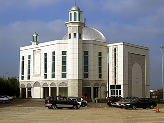

Общие сведения
La mosquée Baitul Futuh (Maison-des-Victoires) est un édifice religieux islamique situé à Londres en Angleterre. Elle est considérée comme la plus grande mosquée en Europe occidentale mais selon d'autres sources, la mosquée de Rome est considérée comme étant la plus grande en Europe occidentale. Achevée en 2003, pour un coût d'environ 5,5 millions £, entièrement financée à partir de dons de la communauté musulmane Ahmadiyya, la mosquée couvre une superficie de 5,2 hectares et le complexe complet peut accueillir jusqu'à 10 000 fidèles. Elle est située dans la banlieue sud-ouest de Morden à Londres, Borough londonien de Merton, à côté de la gare de Morden Sud, à environ 700 mètres de la station de métro Morden.
مسجد بيت الفتوح ، هو مجمع إسلامي في لندن بإنجلترا في المملكة المتحدة. وتقول الجماعة الإسلامية الأحمدية أنه أكبر مساجدها في أوروبا الغربية. شًيد المسجد عام 2003 بتكلفة قدرها 5.5 مليون جنيه استرليني من تبرعات أعضاء الجماعة الأحمدية. ويغطي المسجد مساحة قدرها 5.2 فدان ويستوعب بالكامل حوالي 10000 من المصلين.
The Baitul Futuh is a mosque complex of the Ahmadiyya Muslim Community, situated in Morden, London. It is one of the largest mosque complexes in Europe. Completed in 2003 at a cost of £15 million, entirely from donations of Ahmadi Muslims, the Mosque can accommodate a total of 13,000 worshippers. The main mosque has a height of 23m above ground, and to maximise capacity the building extends below ground. Baitul Futuh is located in the south-west London suburb London Borough of Merton. It is situated next to Morden South railway station, 0.4 miles from Morden Underground station and one mile from Morden Road tram stop.
Beytü'l-Fütuh Camii, Birleşik Krallık'ın başkenti Londra'da bulunan bir Ahmedî camisidir. Cami, 2003 yılında tamamlanmış olup Merton semtinde Morden'da Londra Yolu üzerinde yer almaktadır.
Baitul Futuh adalah sebuah kompleks masjid dari Komunitas Muslim Ahmadiyah, yang terletak di Morden, London. Masjid tersebut adalah salah satu masjid terbesar di Eropa Barat.
بیت الفتوح لندن کے قصبے مورڈن میں واقع مملکت برطانیہ اور بلکہ تمام مغربی یورپ کی سب سے بڑی مسجد سمجھی جاتی ہے۔
Bait ul-Futuh in London ist nach der Moschee von Rom die zweitgrößte Moschee in Westeuropa und die größte Moschee der Ahmadiyya Muslim Jamaat (AMJ) außerhalb Pakistans. Zur Namengebung siehe auch Futuh.
Baitul Futuh es una mezquita situada en el barrio de Morden, en Merton, Londres, Reino Unido. Se trata de la mezquita más grande de Europa occidental; fue construida y es mantenida por la comunidad Ahmadía. La mezquita fue inaugurada el 3 de octubre de 2003 por Mirza Masrur Ahmad, cabeza de la comunidad.
Baitul Futuh è un complesso religioso della comunità musulmana Ahmadiyya, situato a Morden, Londra. È una delle più grandi moschee dell'Europa occidentale. Completato nel 2003 con un costo di 15 milioni di sterline, interamente provenienti da donazioni di musulmani ahmadi, l'intero complesso può ospitare 13.000 persone. La moschea principale ha un'altezza di 23 metri dal suolo e per massimizzare la capacità l'edificio si estende su due piani di cui uno interrato. Baitul Futuh si trova nel borgo londinese di Merton, vicino alla stazione ferroviaria di Morden South, a 600 metri dalla stazione della metropolitana di Morden e a 1,6 km dalla fermata del tram di Morden Road.
De Bait ul-Futuh is een moskee van de Ahmadiyya Moslim Gemeenschap in de stadswijk Morden in Londen, Verenigd Koninkrijk en de grootste moskee van de gemeenschap buiten Pakistan. Het is tevens de grootste moskee van West-Europa. De bouw ervan duurde zo'n vijf jaar en op 3 oktober 2003 werd de moskee geopend.
Ба́йтуль-Футу́х — мечеть в пригороде Лондона, Англия — самая большая в Западной Европе. Строительство завершено в 2003 году по цене приблизительно 5,5 миллионов фунтов стерлингов, все это пожертвовала Ахмадийская мусульманская община. Мечеть занимает площадь 5,2 акров и полный комплекс может вместить до 10000 богомольцев. Он расположен в юго-западном пригороде Лондона Мордене, округ Мертона, примерно в 700 метрах от станции метро Морден.
Baitul Futuh är den största moskén i Västeuropa. Den tillhör ahmadiyyarörelsen och byggdes av Ahmadiyya Muslim Community och stod klar 2003. Den är belägen i sydvästra London, i förorten Morden. Den täcker ett område på 21 000 kvadratmeter och har en kapacitet på 10 000 gudstjänstdeltagare. Moskén drabbades av en brann 27 september 2015, som troligen hade orsakats av matlagning.
На карте
Документы и ссылки
- Wikipédia — Français
- Wikipédia — العربية
- Wikipédia — English
- Wikipédia — Türkçe
- Wikipédia — Bahasa Indonesia
- Wikipédia — اردو
- Wikipédia — Deutsch
- Wikipédia — Español
- Wikipédia — Italiano
- Wikipédia — Nederlands
- Wikipédia — Русский
- Wikipédia — Svenska
- Wikidata — Q788652
Данные: Викиданные (CC0), обновляются каждые 3 месяца. Год — самая ранняя известная дата постройки здания: для здания, ставшего мечетью позже (как Айя-София), это год постройки исходного здания. Фото: Викисклад, автор и лицензия — на странице каждой фотографии.